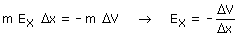
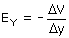
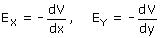

| Relación entre campo y potencial Considera un campo uniforme E = Ex i
+ Ey j y dos puntos A, B sobre el eje x, separados una
distancia Δx TAB = m·(Exi + Ey j)·(Δx i + 0 j) = m·Ex·Δx El trabajo también se puede determinar a partir de la variación de la energía potencial de la masa: TAB = -ΔEP = -m·(VB - VA) = -m·ΔV Igualando las dos expresiones:  Analogamente se puede obtener:  La componente x | y del campo es la relación
entre el cambio de potencial y el cambio en la coordenada x | y Las relaciones obtenidas para el campo uniforme sirven para otro no uniforme sin más que tomar los cambios de coordenada y po-tencial muy, muy pequeños (Diferencial)  La componente x | y del campo es la derivada del potencial res-pecto a la coordenada x | y. El signo negativo indica que la componente del campo apunta en el sentido de los potenciales decrecientes |